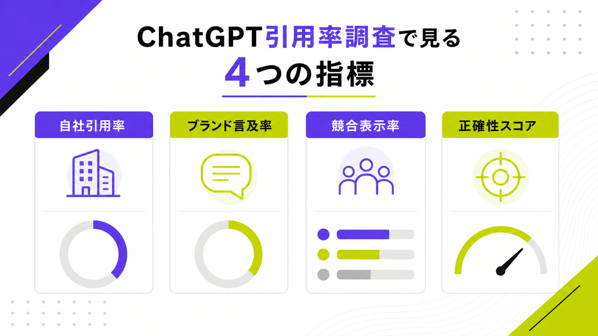
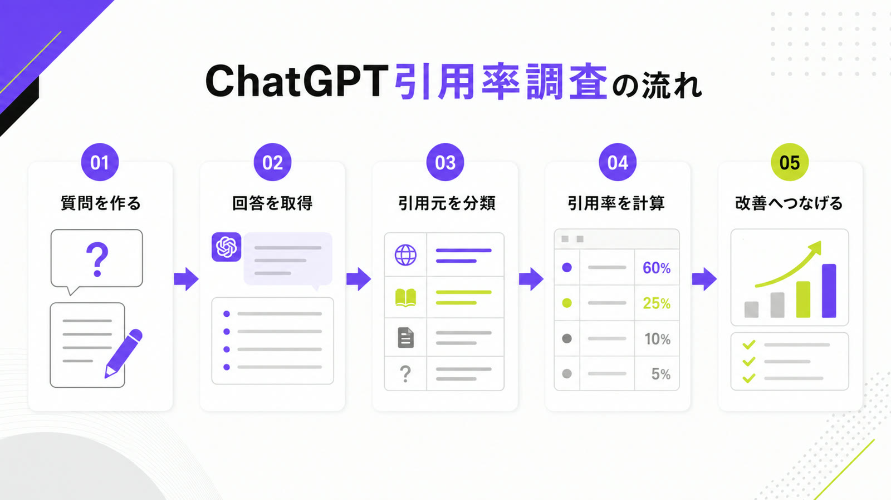
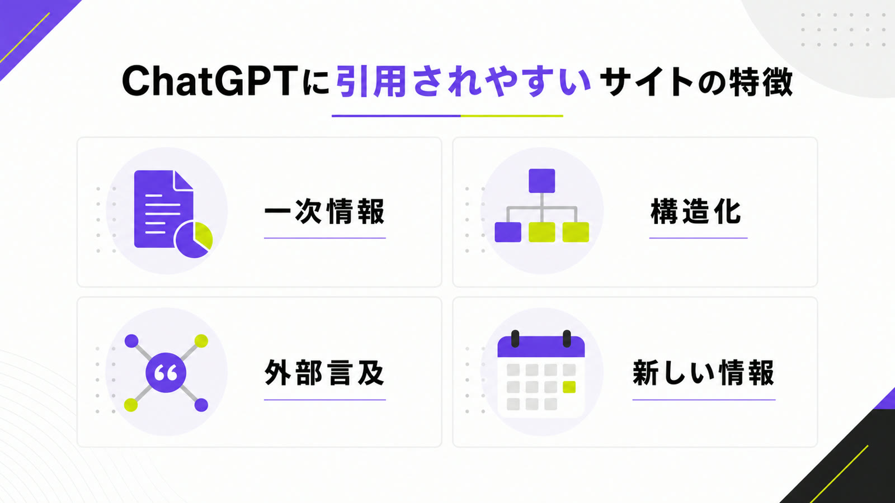
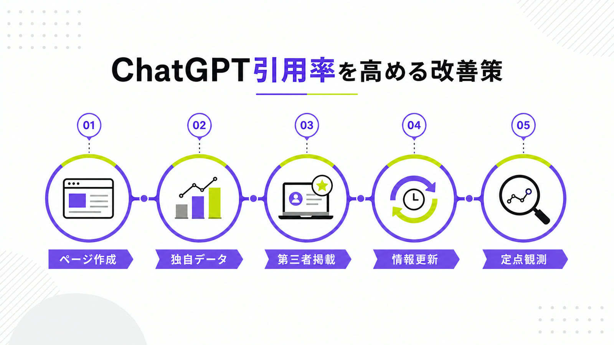

ChatGPTの引用率調査とは？自社サイトがAI回答に引用される割合を調べる方法

AI検索の利用が広がるなかで、企業のWeb集客は「検索結果で上位表示されるか」だけでは判断しにくくなっています。ユーザーがChatGPTに質問し、回答の中で企業名やサービス名、記事URLを知るケースが増えているためです。
ChatGPTの検索機能では、回答にインライン引用が表示される場合があり、ユーザーは回答内の出典からWebサイトへ移動できます。そのため、AI回答内でどのように扱われているかを調べることは、AI検索対策における重要な可視性チェックになっています。
この記事では、ChatGPTの引用率調査で見るべき指標、具体的な調査方法、引用率を高めるための改善策を解説します。
目次

ChatGPTの引用率調査とは
ChatGPTの引用率調査とは、特定の質問に対してChatGPTが回答を生成したとき、自社サイトや自社ブランドがどれくらい引用・言及されるかを確認する調査です。
従来のSEOでは検索順位やクリック数を重視していました。一方、AI検索では「回答内に出るか」「出典として扱われるか」「競合と比較してどの位置にいるか」が重要になります。
ChatGPTにおける「引用」とは
ChatGPTにおける引用とは、検索機能を使った回答内で、Webページが出典として表示される状態を指します。回答文の横や下部に引用リンクが表示され、ユーザーがその情報の根拠を確認できる形です。OpenAIのヘルプでも、検索を使った回答では関連リンクを確認できると説明されています。
ただし、企業にとって重要なのはリンク付きの引用だけではありません。会社名、サービス名、商品名、独自データ、記事内容が回答文に含まれることも、AI検索上の接点になります。そのため、調査では「URLが引用されたか」と「ブランドが言及されたか」を分けて確認する必要があります。
調査では、出典リンクの有無だけでなく、回答文にどの表現で使われたかも確認します。自社の強みが根拠として扱われているのか、単なる補足情報として出ているのかで、改善すべき方向が変わります。
参考：OpenAI Help Center｜ChatGPT Search
参考：OpenAI｜Introducing ChatGPT search
引用率と言及率の違い
引用率とは、調査した質問のうち、自社サイトのURLが出典として表示された割合です。たとえば30個の質問を調査し、そのうち6個の回答で自社サイトが引用された場合、引用率は20％になります。ページ単位で集計すれば、どの記事やサービスページがAI回答に使われやすいかも把握できます。
一方、言及率は、URLが出ていなくても会社名やサービス名が回答内に登場した割合です。比較・おすすめ・選び方の質問では、リンクより先にブランド名だけが出るケースもあります。AI検索上の可視性を正しく見るには、引用率だけでなく言及率もセットで確認することが重要です。
特に新しい領域や専門性の高いBtoB商材では、最初からURL引用を狙うより、まずAI回答内でブランド名が自然に出る状態を作るほうが現実的です。引用率と言及率を分けて見ることで、段階的な改善ができます。
ChatGPT引用率調査が必要な理由
ChatGPT引用率調査が必要なのは、検索順位だけではAI回答内の見え方を判断できないためです。Googleで上位表示されているページが必ずChatGPTに引用されるとは限らず、逆に検索流入が少ないページがAI回答の出典になることもあります。
Ahrefsが2025年9月のChatGPT上位1,000引用ページを分析した調査では、引用ページの28.3％がオーガニックキーワードを持たないページでした。つまり、従来のSEO指標だけを見ていると、AI検索上で評価されているページを見落とす可能性があります。
さらに、AI回答はユーザーの比較検討の前段階に入り込みます。そこで自社が表示されなければ、検索結果を見てもらう前に候補から外れる可能性があります。だからこそ、AI上の見え方を定期的に調べる必要があります。
参考：Ahrefs｜67% of ChatGPT’s Top 1,000 Citations Are Off-Limits to Marketers
ChatGPT引用率調査で見るべき指標
ChatGPTの引用率調査では、「引用された・されていない」だけを見ると改善につながりません。
自社サイトの引用率、ブランド言及率、競合との比較、回答文の正確性まで見ることで、AI検索上の強みと弱みを判断できます。

自社サイトの引用率
自社サイトの引用率は、調査対象の質問に対して、自社サイトのURLがどれくらい出典として表示されたかを示す指標です。サービス名を含む質問だけでなく、業界課題、比較、選び方、費用、導入事例など、見込み客が実際に聞きそうな質問で測定します。
見るべきなのは、単純な引用回数だけではありません。どのURLが引用されたのか、どの質問で引用されたのか、回答内でどの文脈に使われたのかまで確認します。サービスページだけでなく、ブログ記事、調査レポート、事例ページ、FAQが引用されるケースもあります。
この指標を見ることで、自社サイト内のどのコンテンツがAIに評価されているかがわかります。逆に、重要なサービスページがまったく引用されていない場合は、情報量や構成、外部からの言及が不足している可能性があります。
ブランド言及率
ブランド言及率は、回答内に会社名やサービス名が登場した割合です。URLが引用されていなくても、ChatGPTの回答で「代表的なサービス」「比較対象」「相談先候補」として自社名が出ていれば、AI検索上の認知に入り込めている状態です。
特にBtoBでは、ユーザーが最初から会社名で検索するとは限りません。「おすすめの支援会社」「〇〇に強い企業」「導入すべきツール」のような質問から検討が始まります。そこで自社名が出るかどうかは、SEO順位とは別の重要な指標になります。
ブランド言及率が高いのに引用率が低い場合は、認知はされているものの、根拠として使えるページが弱い状態です。反対に、引用はあるのにブランド名が弱い場合は、ページ単体の評価に対してブランド想起が追いついていないと考えられます。
競合比較での表示率
ChatGPT引用率調査では、自社だけでなく競合の表示状況も確認します。自社サイトが引用されていなくても、競合サイトや比較メディアが頻繁に出ているなら、AI回答内の選択肢を競合に取られている状態です。
調査では、競合名の登場回数、引用URL、回答内の掲載順、説明のされ方を記録します。自社が出ているかどうかだけでなく、競合と比べて有利に説明されているか、不利に説明されているかまで見ることで、改善すべき情報の不足が見えてきます。
特に注意したいのは、競合が「おすすめ」「実績が豊富」「比較対象」として繰り返し出ているケースです。この場合、AI回答内ではすでに競合が優位なポジションを取っているため、自社サイトと外部露出の両方を見直す必要があります。
引用文脈の正確性
引用文脈の正確性も重要です。AI回答に自社名が出ていても、サービス内容、料金、対応領域、実績、強みが誤っていれば、むしろ機会損失につながります。古い情報をもとに説明されている場合もあるため、引用の有無だけで評価しないことが大切です。
Tow Centerの調査では、ChatGPT Searchを含む複数の生成AI検索ツールで、ニュース記事の特定や引用に関する誤りが確認されています。AI回答は便利ですが、常に正確とは限りません。引用率調査では、出ているかどうかに加えて、正しく出ているかを必ず確認します。
たとえば、現在は提供していないサービスが残っていたり、古い料金が回答に出たりすると、問い合わせ前の段階で誤解が生まれます。引用文脈の確認は、AI検索上の評判管理としても重要です。
参考：Columbia Journalism Review｜AI Search Has a Citation Problem
ChatGPT引用率を調査する方法
ChatGPT引用率は、調査対象の質問を決め、同じ条件で回答を取得し、自社・競合・引用URLを記録することで測定できます。
重要なのは、思いつきの質問で調べるのではなく、見込み客が実際に入力しそうなプロンプトを用意することです。

調査対象のプロンプトを作成する
最初に、調査対象となるプロンプトを作成します。通常のSEOキーワードをそのまま使うのではなく、ユーザーがChatGPTに相談する形へ変換します。「LLMO対策 会社」ではなく、「LLMO対策を依頼するなら、どんな会社を選ぶべきですか」のように会話型にします。
プロンプトは、認知・比較・検討・導入前の不安に分けると作りやすくなります。たとえば「〇〇とは」「〇〇の選び方」「〇〇に強い会社」「〇〇の費用相場」「〇〇の導入事例」などです。最低でも20〜50問ほど用意すると、単発のブレに左右されにくくなります。
プロンプト作成では、自社が出てほしい質問だけに偏らないことも大切です。見込み客が競合比較や失敗回避のために聞く質問も含めることで、実際の検討プロセスに近い調査になります。
ChatGPTで回答を取得する
プロンプトを用意したら、ChatGPTで回答を取得します。このとき、通常回答と検索機能を使った回答は分けて記録します。検索機能を使った回答ではURL引用が出やすく、通常回答ではブランド言及や一般的な説明が中心になるため、同じ基準で混ぜると判断を誤ります。
記録する項目は、調査日、プロンプト、回答内容、引用URL、自社名の有無、競合名の有無、回答内の掲載順、説明の正確性です。同じプロンプトを複数回試すと回答が変わる場合もあるため、1回の結果だけで結論を出さないことが重要です。
可能であれば、回答をスプレッドシートで管理します。あとから集計しやすくなるだけでなく、過去の回答と比較して、どの施策のあとに引用や言及が増えたのかを追いやすくなります。
自社・競合・第三者サイトを分類する
回答を取得したら、引用元や言及先を分類します。自社サイト、競合サイト、比較メディア、業界メディア、ニュースサイト、口コミサイト、SNS、行政・業界団体、Wikipediaなどに分けると、ChatGPTがどの種類の情報を根拠にしているかが見えます。
Profoundの調査では、ChatGPT、Google AI Overviews、Perplexityで引用元の傾向が異なることが示されています。ChatGPTはWikipediaの比率が高く、Google AI OverviewsやPerplexityはRedditなど別の情報源も目立ちます。媒体ごとの違いを把握すると、外部対策の優先順位を決めやすくなります。
参考：Profound｜AI Platform Citation Patterns
引用率を計算する
引用率は、調査したプロンプト数を母数にして計算します。たとえば50問を調査し、10問で自社サイトが引用された場合、自社サイトの引用率は20％です。同じように、ブランド名が出た割合、競合が出た割合、正確に説明された割合も計算します。
集計では、全体平均だけでなく質問カテゴリ別に見ることが重要です。「費用」では弱いが「選び方」では強い、「比較」では競合に負けているが「導入事例」では引用される、という差が出ます。カテゴリ別に見れば、次に作るべきページや更新すべき情報が明確になります。
数値化すると、感覚では見えにくい課題が明確になります。たとえば、全体の引用率は高くても商談につながる質問では弱い、というように優先順位をつけやすくなります。
| 指標 | 計算方法 | 見るべきこと |
|---|---|---|
| 自社引用率 | 自社サイトが引用された回数 ÷ 調査プロンプト数 | 自社サイトが出典として使われているか |
| ブランド言及率 | 自社名が出た回数 ÷ 調査プロンプト数 | URLなしでも認識されているか |
| 競合表示率 | 競合名が出た回数 ÷ 調査プロンプト数 | 競合との差 |
| 回答内順位 | 回答内で何番目に出たか | 第一想起に近いか |
| 正確性スコア | 正しい説明の数 ÷ 言及回数 | 誤情報が出ていないか |
ChatGPTに引用されやすいサイトの特徴
ChatGPTに引用されるサイトは、単にSEOで上位表示されているサイトとは限りません。
AIが回答の根拠として使いやすい情報、つまり明確で検証しやすく、構造化された情報を持つページが引用されやすくなります。

一次情報がある
一次情報があるページは、ChatGPTに引用される候補になりやすいページです。独自調査、アンケート結果、導入事例、料金データ、比較表、専門家コメントなどは、他サイトにはない情報として扱われやすくなります。
逆に、どこにでもある一般論だけの記事は、AIにとって引用する理由が弱くなります。AIは回答を作るとき、定義や手順だけでなく、根拠になる具体的な情報を必要とします。自社ならではのデータや事例を持つページを増やすことが、引用率改善の土台になります。
一次情報は、外部メディアや比較記事に取り上げられる材料にもなります。自社サイト内で公開したデータが外部で言及され、その情報をAIが参照する流れを作れれば、引用率と言及率の両方を伸ばしやすくなります。
情報が構造化されている
情報が構造化されているページは、AIが内容を読み取りやすくなります。H2、H3、表、箇条書き、FAQ、定義文、比較軸が明確なページは、回答の一部として使いやすい情報になります。人間にとって読みやすいだけでなく、AIにとっても意味を抽出しやすい構成です。
特に重要なのは、結論が先に書かれていることです。前置きが長く、何を言いたいのかわかりにくい文章は、AI回答の根拠として使いにくくなります。質問に対する答え、判断基準、具体例を明確に分けることで、引用される可能性を高められます。
また、1ページ内で複数のテーマを詰め込みすぎないことも大切です。質問に対応する見出しを分け、必要な答えをすぐ見つけられる構成にすることで、AIにもユーザーにも伝わりやすくなります。
外部サイトでも言及されている
自社サイトだけを整えても、AI回答での可視性は十分に高まりません。ChatGPTは、さまざまなWeb上の情報をもとに回答を作るため、外部サイトで会社名やサービス名がどのように扱われているかも重要です。
比較メディア、業界メディア、プレスリリース、取材記事、口コミ、レビュー、SNSでの言及が増えると、AIが自社を認識する接点が増えます。特に第三者がどう評価しているかは、比較・おすすめ系の回答に影響しやすいため、外部対策も引用率調査の結果に合わせて進める必要があります。
自社発信だけでは、どうしても宣伝色が強く見える場合があります。第三者サイトで客観的に取り上げられている状態を作ることで、AIが回答内で自社を候補として扱いやすくなります。
更新日が新しい
更新日が新しい情報は、AI検索上でも重要です。料金、機能、対応領域、実績、導入事例などが古いままだと、回答内で誤った情報が出る原因になります。特に変化の早い領域では、古い記事を放置するとAIに誤認されるリスクがあります。
AhrefsのChatGPT引用ページ分析でも、検出できた公開日の範囲では、直近2年以内に公開されたページが多く含まれていました。すべてのページに当てはまるわけではありませんが、情報の鮮度はAI検索上の可視性に関わる要素として無視できません。
更新では、単に日付を変えるだけでは不十分です。古い記述を直し、最新の事例や数値を加え、現在のサービス内容と一致させることで、AIにもユーザーにも信頼されやすいページになります。
参考：Ahrefs｜67% of ChatGPT’s Top 1,000 Citations Are Off-Limits to Marketers
ChatGPT引用率を高めるための改善策
ChatGPTの引用率を高めるには、AIが参照しやすい情報を自社サイト内に増やすだけでは不十分です。
自社サイトの情報設計、独自データの作成、第三者サイトでの言及、情報更新を組み合わせて進める必要があります。

自社サイトに引用されやすいページを作る
自社サイトでは、AIが回答の根拠にしやすいページを意図的に作ることが重要です。具体的には、調査レポート、比較記事、導入事例、料金ページ、FAQ、用語解説、選び方ガイド、業界課題の解説記事などです。
ポイントは、単に記事数を増やすことではありません。見込み客がChatGPTに聞きそうな質問に対して、明確な答えを持つページを用意します。「何ができるのか」「誰に向いているのか」「競合と何が違うのか」「導入前に何を確認すべきか」をページごとに明確にすると、引用されやすい情報資産になります。
既存記事を改善する場合も、検索順位だけを基準にしないことが大切です。ChatGPTで出てほしい質問を先に決め、その質問に対してページ内で明確に答えられているかを確認します。
独自データを作る
独自データは、ChatGPTに引用される理由を作るうえで強力です。アンケート調査、市場調査、利用者調査、支援前後の変化、業界別の課題データなどは、他社が簡単に真似できない情報になります。
大規模な調査でなくても構いません。顧客へのヒアリング結果、問い合わせ内容の傾向、導入企業の課題、成果の変化を集計するだけでも、独自性のある情報になります。AIに引用されたいなら、一般論をまとめるだけでなく、自社だから出せる根拠を増やすことが重要です。
作成したデータは、記事内に埋め込むだけでなく、調査レポートやプレスリリースとして展開すると効果的です。複数の場所で同じテーマの情報が言及されることで、AIが認識する接点を増やせます。
第三者サイトでの掲載を増やす
第三者サイトでの掲載は、AIに自社を認識させる接点になります。プレスリリース、業界メディアへの寄稿、取材記事、比較メディアへの掲載、専門家コメント、共同調査などを通じて、自社名やサービス名がWeb上で自然に言及される状態を作ります。
特に、比較・おすすめ系のプロンプトでは、自社サイトよりも第三者サイトの情報が参照される場合があります。自社サイトだけで勝とうとするのではなく、外部サイト上での評価や掲載面も設計することで、ChatGPTの回答内に入る可能性を高められます。
掲載先は、数だけでなく文脈も重要です。自社の強みと関係の薄い媒体に載るより、見込み客が比較検討で触れる媒体や、業界内で信頼されている媒体に掲載されるほうが効果的です。
AIに誤解されにくい情報設計にする
AIに誤解されにくい情報設計も欠かせません。会社概要、サービス内容、料金、対象業種、対応範囲、実績、強み、競合との差分を明確に書きます。曖昧な表現が多いと、AIが一般的な説明で補完してしまい、実態と違う回答になることがあります。
また、古いサービス名、終了したプラン、変更前の料金、過去の実績を放置しないことも重要です。AI回答に誤情報が出ている場合は、自社サイトの該当箇所を更新し、外部サイトの古い情報も可能な範囲で修正します。引用率だけでなく、正確性を高める視点が必要です。
特に、似たようなサービス名や過去の事業がある場合は注意が必要です。AIが別サービスと混同しないように、対象顧客、提供範囲、現在の主力サービスを明確にしておきます。
ChatGPT引用率調査を実施する際の注意点
ChatGPTの回答は、質問文、検索機能の有無、調査タイミングによって変わります。
そのため、1回の回答だけを見て判断するのではなく、条件をそろえて定点観測することが重要です。
1回の回答だけで判断しない
ChatGPTの回答は、同じ質問でも毎回完全に同じになるとは限りません。質問文の少しの違い、検索機能の有無、回答タイミング、会話の文脈によって、引用元や言及ブランドが変わることがあります。
そのため、1回の回答だけを見て「引用されている」「引用されていない」と判断するのは危険です。複数のプロンプトを用意し、必要に応じて同じ質問を複数回試し、全体の傾向を見ることが重要です。月次で同じ条件の調査を続けると、改善の方向性が見えやすくなります。
調査条件を固定することも大切です。同じモデル、同じプロンプト、同じ記録項目で継続して調べることで、偶然の変化ではなく、施策による変化を判断しやすくなります。
引用率だけを追いすぎない
引用率は重要な指標ですが、それだけを追いすぎると判断を誤ります。たとえ引用されていても、文脈が悪い、説明が古い、競合より弱く見える、強みが伝わっていない状態なら、成果にはつながりにくいからです。
見るべきなのは、引用率、言及率、回答内順位、説明の正確性、競合との比較です。AI回答内で自社がどのように位置づけられているかまで確認して、初めて改善方針が決まります。数字だけでなく、回答文そのものを読む工程を省かないことが大切です。
たとえば、引用率は低くても、重要な比較質問で自社が上位に出ているなら価値があります。反対に、引用率が高くても、関係の薄い質問ばかりで出ているなら、商談や問い合わせにはつながりにくい可能性があります。
ChatGPT以外のAI検索も確認する
ChatGPTだけを見ていると、AI検索全体の可視性を把握しきれません。ユーザーはChatGPTだけでなく、Google AI Overviews、Gemini、Perplexity、Copilotなど複数のAI検索・AI回答機能に触れています。
Profoundの調査でも、AIプラットフォームごとに引用元の傾向が異なることが示されています。ChatGPTで強くても、Google AI Overviewsでは出ていない可能性があります。逆に、特定の媒体では競合より強い場合もあります。複数媒体で調査することで、改善施策の優先順位を決めやすくなります。
媒体ごとの結果を分けて管理すれば、ChatGPTでは自社サイト強化、Google AI Overviewsでは外部メディア対策、Perplexityではレビューや比較情報の強化など、施策を分けて設計できます。
ChatGPT引用率調査はAIO・LLMO対策の第一歩
ChatGPT引用率調査は、AIO・LLMO対策の現状把握に使える調査です。
自社がAI回答内でどのように扱われているかを把握すれば、必要なコンテンツ、外部露出、情報設計の改善点が見えてきます。
引用率調査で現状を把握する
引用率調査では、自社がAI回答内に出ているか、どのページが引用されているか、どの質問で弱いか、競合はどれくらい表示されているかを確認します。これにより、AI検索上の現在地を客観的に把握できます。
重要なのは、感覚ではなくデータで見ることです。「自社は有名だから出るはず」「SEOで上がっているから大丈夫」と考えていても、実際のAI回答では競合や第三者メディアばかりが出ている場合があります。まず現状を測ることで、優先すべき改善箇所が明確になります。
現状把握ができれば、むやみに記事を増やす必要はなくなります。足りないテーマ、弱い質問、競合に取られている文脈を見つけ、効果が出やすい場所から手を入れられます。
調査結果をもとに改善施策を決める
引用率調査の結果は、そのまま改善施策に落とし込めます。費用系の質問で弱ければ料金ページや費用記事を強化し、比較系で競合に負けていれば比較表や選び方記事を作ります。事例が不足しているなら、導入事例や成果データを増やします。
また、外部サイトばかりが引用されている場合は、プレスリリース、寄稿、取材、比較メディア掲載などの外部対策が必要です。自社サイトの内部対策と、外部での言及獲得を分けて考えることで、AIO・LLMO対策の打ち手が具体的になります。
このように、調査結果から施策へつなげることで、AIO・LLMO対策は抽象論ではなくなります。どの質問に対して、どのページを作り、どの外部露出を増やすかまで落とし込めます。
定点観測で改善効果を測る
ChatGPT引用率は、一度調査して終わりではありません。記事を追加したり、外部掲載を増やしたりしても、すぐに回答へ反映されるとは限らないため、月次や四半期ごとに同じ条件で定点観測することが重要です。
定点観測では、引用率、言及率、競合表示率、回答内順位、正確性スコアを継続して見ます。改善前後の変化を追えば、どの施策がAI検索上の可視性に効いているのか判断しやすくなります。SEO順位とは別のKPIとして管理することで、AI検索時代の集客基盤を作れます。
また、定点観測を続けることで、競合の動きにも気づきやすくなります。自社の引用率が変わらなくても、競合の表示率が上がっている場合は、早めに対策を見直す必要があります。
まとめ：ChatGPT引用率調査でAI検索上の見え方を把握しよう
ChatGPT引用率調査は、自社サイトやブランドがAI回答内でどれくらい引用・言及されているかを確認するための調査です。SEO順位や検索流入だけでは、AI検索上の見え方までは把握できません。
調査では、自社サイトの引用率、ブランド言及率、競合比較、回答内順位、引用文脈の正確性を確認します。さらに、調査結果をもとに、引用されやすいページの作成、独自データの追加、第三者サイトでの言及獲得、情報更新を進めることが重要です。
AIO・LLMO対策では、まず自社がAI回答内でどのように扱われているかを知ることが出発点になります。ChatGPT引用率調査を行うことで、現状の可視性、競合との差、改善すべきコンテンツや外部露出の方向性を明確にできます。
AIMAでは、ChatGPTやAI検索上での引用・言及状況を調査し、AIO・LLMO対策に必要なコンテンツ設計や外部対策まで支援しています。AI検索上での自社名・競合名の表示状況を把握したい場合は、まず引用率調査から始めることをおすすめします。